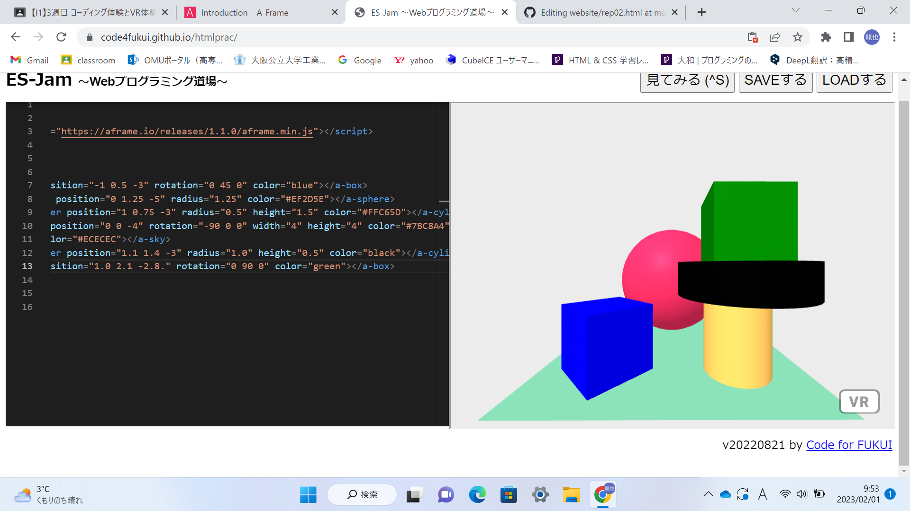
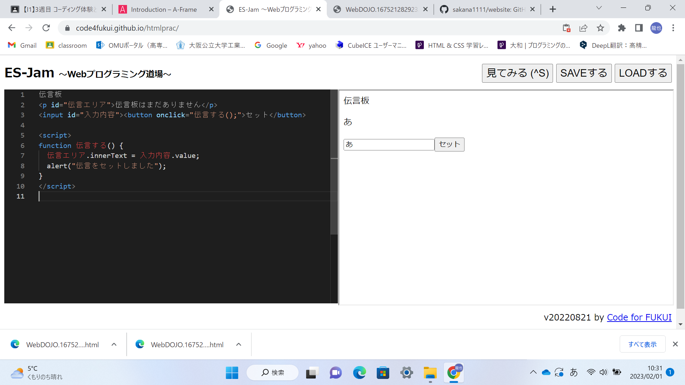

第3週目
3-1 JavaScript体験：VR空間を作る

伝言板
1.内容
javaScriptを使ってVR空間作りました。
2.感想
javascriptを使ってVR空間を作ってみて、座標をほかの物体との位置関係を考えて数値を入力するのが大変でした。
3-2 JavaScript体験：伝言プログラムを作る

伝言板
1.内容
javaScriptを使ってを使って伝言プログラムを作りました。
2.感想
セミコロンや｛｝が抜けていたりするとエラーがでてプログラムが動かないと知ってすべてを正確に入力するのが大切なんだと感じました。
コードが多くなればなるほど入力のし忘れが起きやすくなるので、そういったところがプログラミングの難しさなんだと感じました。
3-3 JavaScriptプログラムの３次元空間の体験
1.内容
JavaScriptプログラムの三次元空間でボールを出したり物体を動かしたりしました。
2.感想
出したボールを打ち返したりできて楽しかったです。